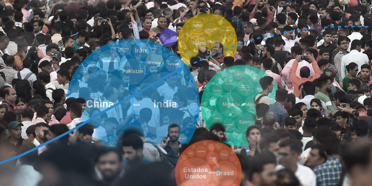

En un artículo reciente publicado en Microsiervos, se analiza la tendencia a la disminución de la natalidad en el mundo y sus posibles consecuencias a largo plazo. El autor destaca que las previsiones de 2017 situaban la población mundial en unos 11.200 millones de personas para 2100, mientras que las estimaciones actuales apuntan a algo más de 9.000 millones hacia 2050. La proyección oficial de Naciones Unidas de 2024 es algo más alta: unos 10.300 millones hacia 2080. El autor también menciona que la fecundidad mundial ha podido caer ya por debajo del nivel de reemplazo, lo que podría significar que la población mundial comienza a disminuir. Este fenómeno se conoce como "catástrofe malthusiana inversa", en la que una población decreciente se enfrenta a una disminución progresiva de trabajadores, investigadores y jóvenes en general. La disminución de la población podría tener implicaciones significativas para la economía y la sociedad en general. Por ejemplo, podría afectar la tasa de crecimiento económico, la disponibilidad de recursos y la estructura de la población en diferentes regiones del mundo. Es importante tener en cuenta que esta tendencia no es nueva y ha sido objeto de estudio en la demografía durante mucho tiempo. La transición demográfica, que se refiere a la fase de alta natalidad/mortalidad, es un fenómeno complejo que requiere atención y análisis por parte de expertos en la materia. En resumen, la disminución de la población mundial es un tema que merece ser examinado de cerca y puede tener implicaciones importantes para el futuro de la humanidad.